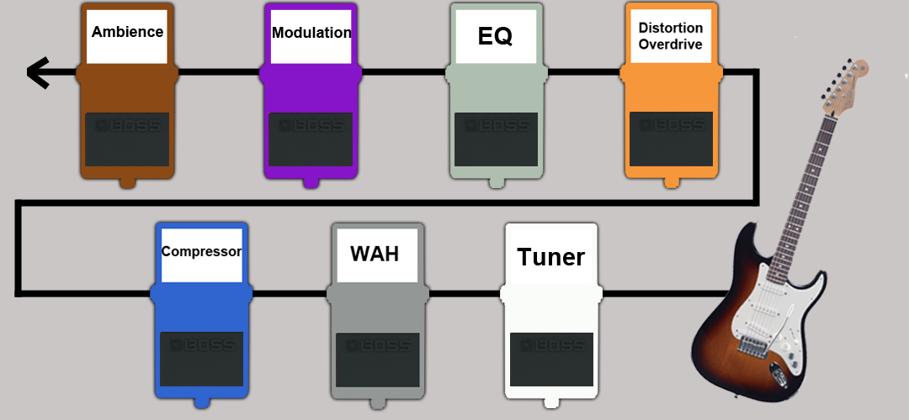

Expressive Parallel Analytics with Transducers
Who am I?
Mission-critical analysis


Metastatistics
https://www.timeshighereducation.com/news/ranking-methodology-2016
- 13 performance indicators
- 10 quotient indicators
- 4 weighted quotients across 6 subjects
- 1,000+ institutions
- 7 ranking tables
Annoying-sized data
Analytic sequence
- Load & join
- Apply rules
- Apply filters
- Normalise data
- Harmonise units
- Summary statistics
- Harmonise ranges
- Calculate score
- Output
- x 13 x 7
Thread-last
(->> (load-data "data.edn") (select-relevant) ;; Apply filters (convert-currency) ;; Normalize (assign-score))
Sequence functions
- map
- filter
- remove
- keep
- take
- partition
Threading II
(->> (load-data "data.edn") (filter relevant?) (map convert-currency) (map assign-score)) ;;({:name "A", :fx 0.8, :a 112.5, :b 62.5, :score 175.0} ;; {:name "B", :fx 0.2, :a 400.0, :b 400.0, :score 800.0} ;; {:name "D", :fx 0.5, :a 100.0, :b 140.0, :score 240.0})
Mapping
(Image of guitar and amp)
Solved?
(defn process [data] (->> (filter relevant? data) (map convert-currency) (map assign-score))) (process (load-data "data.edn")) ;;({:name "A", :fx 0.8, :a 112.5, :b 62.5, :score 175.0} ;; {:name "B", :fx 0.2, :a 400.0, :b 400.0, :score 800.0} ;; {:name "D", :fx 0.5, :a 100.0, :b 140.0, :score 240.0})
…Not really
(def v [1 2 3 4]) ;; #'user/v (type v) ;; clojure.lang.PersistentVector (type (map inc v)) ;; clojure.lang.LazySeq (type (mapv inc v)) ;; clojure.lang.PersistentVector
Enter Transducers

Effects pedals and speaker
(Image of effects pedals board)
No Seq in Sight
(def xform (comp (filter relevant?) (map convert-currency) (map assign-score)))
Add the sequence
(sequence xform (load-data "data.edn")) ;;({:name "A", :fx 0.8, :a 112.5, :b 62.5, :score 175.0} ;; {:name "B", :fx 0.2, :a 400.0, :b 400.0, :score 800.0} ;; {:name "D", :fx 0.5, :a 100.0, :b 140.0, :score 240.0})
It's an open system
(->> (load-data "data.edn") (sequence (comp xform (take 2)))) ;;({:name "A", :fx 0.8, :a 112.5, :b 62.5, :score 175.0} ;; {:name "B", :fx 0.2, :a 400.0, :b 400.0, :score 800.0}) (->> (load-data "data.edn") (sequence (comp xform (map :score)))) ;; (175.0 800.0 240.0)
Sum up a sequence
(->> (load-data "data.edn") (sequence (comp xform (map :score))) (reduce +)) ;; 1215.0
Image of mic'd amp
Transduce
(->> (load-data "data.edn") (transduce (comp xform (map :score)) +)) ;; 1215.0
Reducing functions
(+) ;; 0 (+ 42) ;; 42 (+ 21 21) ;; 42
(conj) ;; [] (conj [42]) ;; [42] (conj [21] 21) ;; [21 21]
Interquartile range
https://github.com/HdrHistogram/HdrHistogram
(defn hist-iqr ;; Zero arity init ([] (DoubleHistogram. 1e8 3)) ;; Two arity step ([hist x] (doto hist (.recordValue x))) ;; Single arity complete ([hist] (vector (.getValueAtPercentile hist 25) (.getValueAtPercentile hist 75))))
Using the custom step
(->> (load-data "data.edn") (transduce (comp xform (map :score)) hist-iqr)) ;; [175.0 240.0]
Steps
(defn in-range [f from to] (filter #(<= from (f %) to)) (defn iqr-sequence [xform data] (let [[from to] (->> data (transduce (comp xform (map :score)) hist-iqr))] (->> data (sequence (comp xform (in-range :score from to)))))
Mean reducing function
TODO: better name (maybe just mean?)
(defn mean-step ([] {:sum 0 :count 0}) ([accum x] (-> (update-in accum [:count] inc) (update-in [:sum] + x))) ([{:keys [sum count]}] (/ sum count))) (->> (load-data "data.edn") (transduce (comp xform (map :score)) mean-step)) ;; 405.0
Mean of the IQR
(defn iqr-mean [xform data] (let [[from to] (->> data (transduce (comp xform (map :score)) hist-iqr))] (->> data (transduce (comp xform (in-range :score from to) (map :score)) mean-step)))) ;; 207.5
Concurrent calculation
What if we want to calculate the mean and the standard deviation?
Juxt
(juxt :a :b)
Juxt
(juxt mean-step sd-step)
Juxt
(defn simple-juxt [& rfns] (fn ([] (mapv (fn [f] (f)) rfns)) ([acc] (mapv (fn [f a] (f a)) rfns acc)) ([acc x] (mapv (fn [f a] (f a x)) rfns acc)))) (def rf (simple-juxt + conj)) (transduce (map identity) rf (range 10)) ;; => [45 [0 1 2 3 4 5 6 7 8 9]]
Early termination
(def rf (simple-juxt + ((take 3) conj))) (transduce (map identity) rf (range 10)) ;; => [45 #object[clojure.lang.Reduced 0x643ea00c {:status :ready, :val [0 1 2]}]]